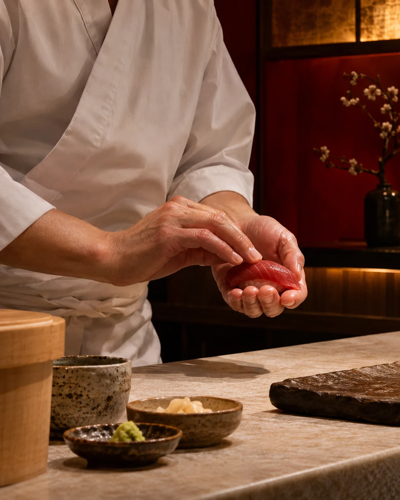
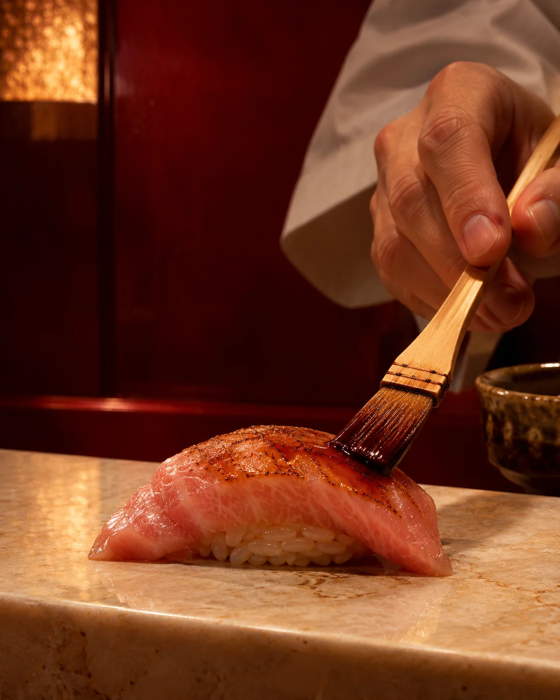
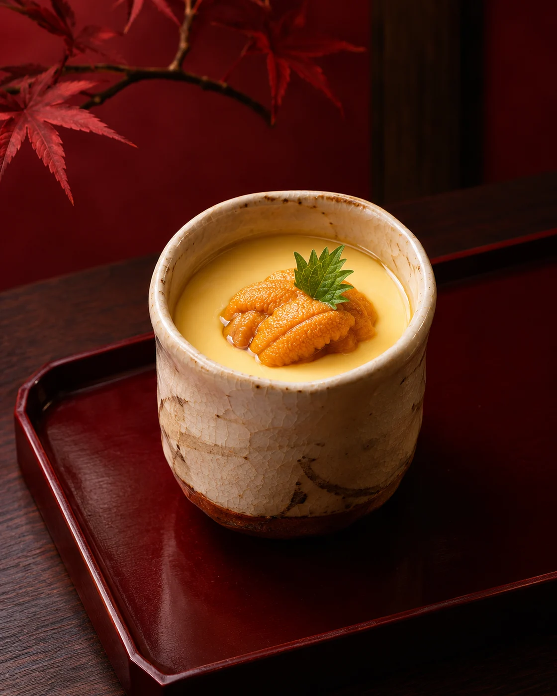
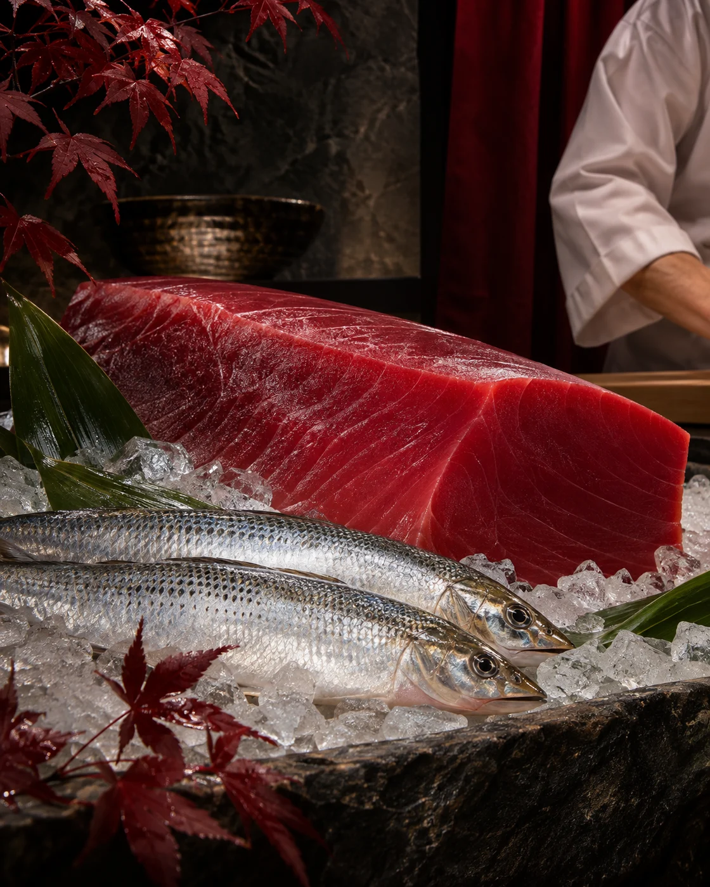

Downtown Dubai · an intimate dining concept
The art of dining,up close.
A singular sushi experience shaped by precision, curiosity, and the pleasure of having a place at the counter.
Make your reservationJIN · Dubai
Dining is an art form.
JIN brings the chef and guest into the same moment. The room is close, the gestures are visible, and each course has the space to become an experience of its own.
Meet the point of view






A chef with more to say.
Jin Xiwei
Jin Xiwei is a Michelin-starred Chinese chef whose cooking is defined by precision, restraint, and an instinct for finding harmony between culinary traditions. His work begins with the discipline of the ingredient and ends with a deeply personal expression on the plate.
Across his career, Jin has developed a language that brings Chinese sensibility into conversation with Japanese technique. At JIN, that point of view becomes intimate: a counter-led experience where each course is prepared in view, paced for the room, and shaped around the guest.
In this space, guests see the patience behind each gesture, the balance behind each bite, and the confidence to leave room for surprise.

The pleasure of letting go.
Omakase invites you to trust the chef. An evening moves through contrasts in temperature, texture, and flavour, with each course arriving at precisely its moment.
No two evenings need to feel identical. What stays constant is attention: to the ingredient, to the room, and to the guest across the counter.
Plan your eveningFor moments worth keeping.
Some evenings ask for a little more privacy. JIN’s proposed intimate setting gives celebrations, conversations, and close company the attention they deserve.
Explore private diningA world apart, within the city.
Warm lacquer, soft light, and a counter that keeps every guest close to the craft. A richly layered setting for Downtown Dubai.
The details, for now.
JIN is a developing concept. We will share the exact details as the restaurant takes shape.
Where will JIN be located?
The concept is planned for Downtown Dubai. The full address will be shared when confirmed.
Who is the chef?
JIN is led by Jin Xiwei, a Michelin-starred Chinese chef bringing a personal, cross-cultural point of view to an intimate sushi counter.
Is the menu available?
The dining experience is envisioned around omakase. The final menu, format, and pricing are still to be confirmed.
Can I make a reservation?
Reservations are not yet open. Booking details will be added here once the restaurant is ready to welcome guests.
Your place at the counter awaits.
An invitation to a different kind of evening in Downtown Dubai. Opening and reservations will be announced here.
Return to the beginning